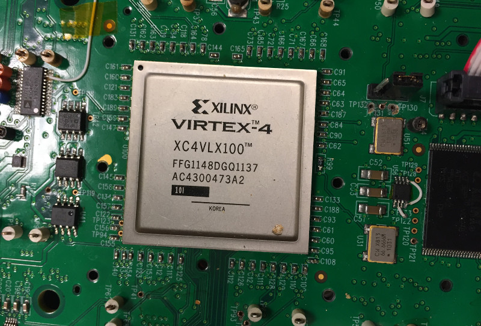
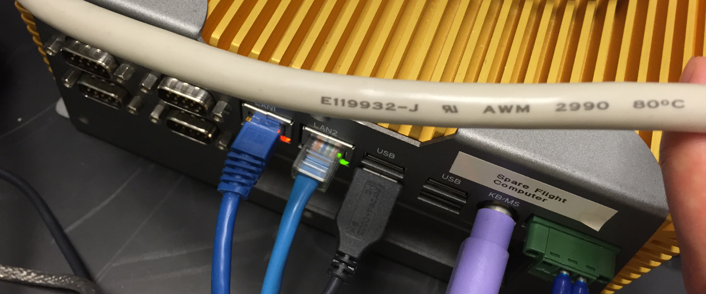
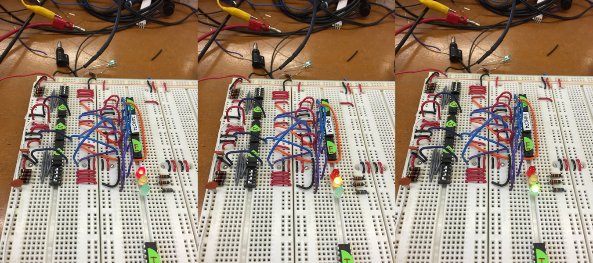
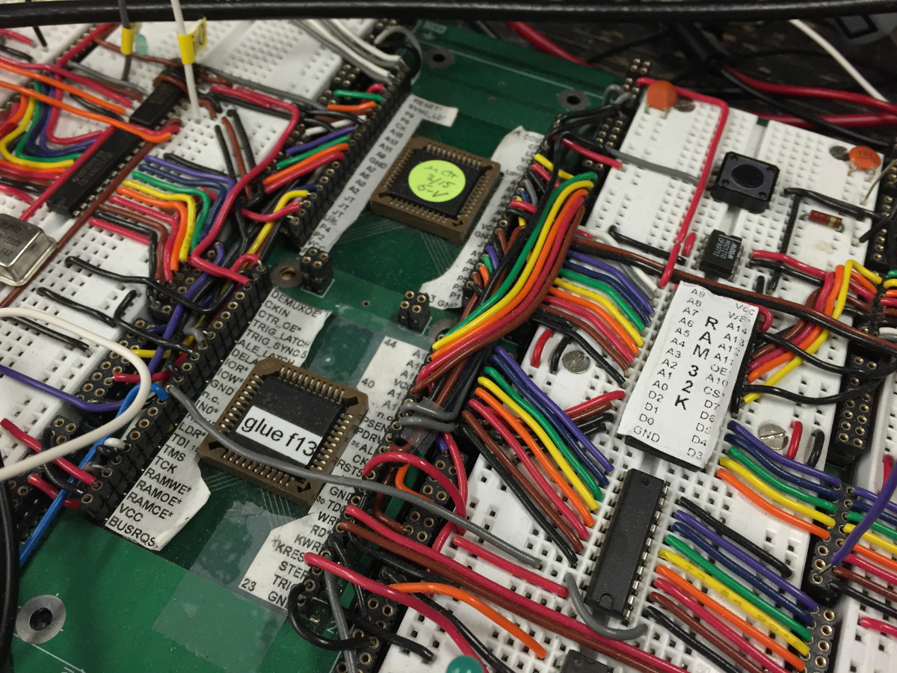
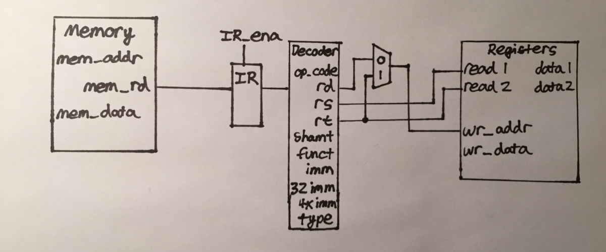

Buffering Data for Single-Port SRAM aboard HREXI Flight Computer
Verilog | VHDL | Xilinx ISE | ModelSim Simulator
Harvard-Smithsonian Center for Astrophysics, Research Assistant

The CZT detector is a custom board with its own protocol for feeding data into a PCI card on the flight computer through an LVDS cable. The SRAM aboard the flight computer has a different clock than the CZT board; on top of that, the incoming data rate is asynchronous as it corresponds to GRB events which don't happen at regular intervals making a buffering scheme necessary. Further complicating the problem is the fact that the SRAM in the flight computer is only single-port; once it is full, it cannot receive data while it is reading the data out.
The scheme I'm helping to develop utilizes a fall-through FIFO using the PCI card's onboard Virtex-II FPGA to catch incoming data while the SRAM empties its data. The base code for the PCI card is in VHDL and Verilog and the modules I have added to link in the FIFO are written in Verilog.

Discrete FSM Stoplight (without Microcontroller)
Only Uses Discrete DIP Electronic Components
Completed as part of Physics 123 at Harvard, Spring 2015
As a final project for the class Physics 123 at Harvard College, I designed and built the control logic for a circuit that would control a stoplight. The timing for the "green" and "red" sequences of the stoplight was programmable through two DIP-switches and the "yellow" sequence was hard-wired. Three 74HC74 dual D flip-flops are used to control the state from between red, yellow, green. Though each 74HC74 contained two flip-flops, only one was used on each chip to keep the wires on one side of the board.

Three separate 74HC164 counters determine the length of time that each light is on. DIP switches control the value loaded into each counter. By adjusting the load value, the time each light is on can be changed. The Cout of each counter triggers the enable on the following light advancing the FSM
Simple Computer Built around Discrete 8051 Processor
Completed as part of Physics 123 at Harvard, Spring 2015

Also in Physics 123 at Harvard College, I wired together a computer with simple I/O functionality based on a Dallas 8051 chip. The computer had a processor, 32K of RAM, an address counter, I/O decoder, an ADC converter, and keypad input from an LCD display. Programs written in assembly for the 8051 architecture could have their code (in hex) loaded into the program memory using the keypad. Those programs could then be executed either instruction-by-instruction by manually clocking through the program or executed continuously by clocking with the 11MHz oscillator.
The glue logic necessary to interface the various components was done through a Xilinx XC9500XL CPLD. The CPLD was programmed through Xilinx ISE and burned into a physical chip that was integrated into the computer board. A CPLD was chosen because it was much more efficient than using discrete digital logic components and less expensive than using a full FPGA.
MIPS Processor/Datapath, written in Verilog
Completed as part of CS-141 at Harvard, Fall 2015

As part of a final project for CS 141, I implemented a simple processor based on the MIPS Instruction Set architecture. The datapath was able to execute R-type, I-type, and J-type instructions from memory loaded with MIPS type instructions. The image above is from an early sketch about the data flow through a MIPS processor.
The seven stages were Instruction Fetch 1 & 2, Decode, Execute, Memory Operation 1 & 2, and Register Writeback. Temporary registers between stages of the processor held values after finishing a cycle. The datapath did not include any pipe-lining in its final implementation but pipe-lining may be added in a future revision. The processor was constructed in Xilinx ISE and synthesized with a Xilinx Spartan-6 FPGA.